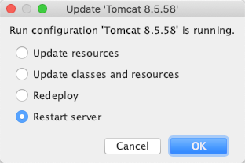
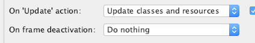

启动选项

每次项目修改后,为了省事都是选Restart.但是这样会部署速度会非常慢
今天了解了一下这几个选项
- 重启Restart: 重启
- 重新部署Redeploy: 将java目录下的文件和xml配置都重新部署到Tomcat.更新class文件,更新web.xml等配置文件,不重启Tomcat,只是删掉原来的,重新发布
- 热部署Update classes and resources: 修改jsp,java,静态资源
- java修改后会被编译成为class,IDE调试模式立即生效,运行模式需要重新部署Redeploy才能生效
- jsp文件不论什么模式,立即生效
- 更新静态资源 Update resources: html,js,css等,直接生效
Configuration
在Configuration的Server配置中,有以下两项配置也与资源更新相关

On frame deactivation: 是IDE在失去焦点的时候会自动触发,开发过程中会因为很多原因随时触发,会消耗CPU,建议使用Do nothing,同官方默认
On Update action: 建议使用update classes and resources,运行模式下（jsp 立即生效，java 需要redeploy才可生效）